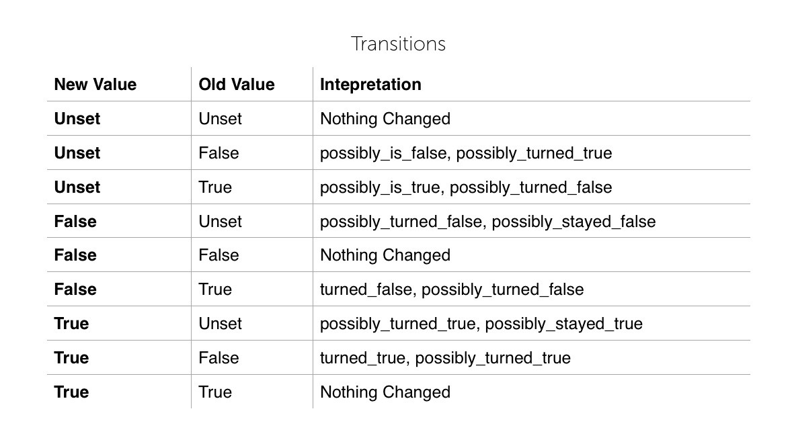

Boolean logic is the basis for how computers work — digital means ones and zeroes, and ones and zeros is another way of saying boolean logic. In this world things are either true or they are false, there is no maybe, no hesitant pause,no anxiety provoking second thoughts. This type of logic goes back to Aristotle with the “law of the excluded middle”. Here’s wikipedia weighing in:
In logic, the law of excluded middle (or the principle of excluded middle) is the third of the three classic laws of thought. It states that for any proposition, either that proposition is true, or its negation is true.
On the one hand, this works incredibly well. (See Math, Science, going to the moon, etc.) But there are limits to this sort of thinking, especially when we are dealing with partial and unfolding knowledge of the world. We need to build (yet another) layer on top of boolean logic to help understand events as they happen.
Are you driving

We’re building an app that will track how you use your Tesla. It’s called TeslaTracks and it looks at your driving habits, battery usage, how efficiently you are using energy and helping you understand the economics and overall awesomeness of electric car ownership.
Let’s talk the most simple question we could ask and explore some of the challenges of understanding the answer to it.
Are you driving?
Logically, this statement could be true or it could be false. But how do we know the answer to this question? The simplified version is
- We are paying attention.
- The cloud server tries to connect to your car over the cellular network.
- If the car is on the network, it returns the transmission state.
- If the transmission state is either D, N, R then we know you are driving at a specific time.
(The actual logic coordinates more data-points than this, including phone accelerometer and GPS.)
Representing Logic
In the world of boolean logic, the car is driving, or it is not driving. In the real world, if any of those steps fail — the most common reason is that you are driving through an area will no cell reception, which is a huge part of the North Eastern US where I mainly drive, and also plenty of parts inside of New York City where the buildings block things, or maybe that you are in a tunnel or parking underground or whatever — then we don’t know what you re doing. The statement isn’t true or false, the statement has an absence of evidence, it could be truish or falsish, it exists in a limbo state.
In most programming languages you don’t deal with ones and zeros, you actually deal with variables that have values which is nice because one of those values is “no value set”. The database language SQL even has a nice NULL for those values that just aren’t known yet, and I’m going to use that 70s all caps awesomeness to break it down.
How do we answer the question, “Is the car driving?” when we can only sample the car at an irregular frequency and some amount communication failure guaranteed?
Hypothesis guides analysis
First, we need to keep track of when we know something, knowledge of the world must be tied to a time and never exists outside of that. Then we need to decide how long we remember that without a sample. The vast majority of things are temporary, and a theory of the world needs to be constantly propped up with incoming data and slowly unwind itself over time when nothing is there. When nothing is happening we should quietly go hibernate.
Step 1:
This says, remember the knowledge of driving for 10 minutes without an event.

Lets talk though a series of events where someone drove from 8:12 to 8:45 though a cell deadzone into an underground garage where they parked. We get a few events, first that the car was parked, then a few driving events before we enter into a area with really spotty service at 8:20, and finally a few before we leave the thing in the garage for a while. Then the car drove at 11:40 until 12:00, but we only got one measly data point, all listed on the left.
Lets break down what the system knows now about the existing data. Before we have data, we don’t know anything. Then we know the car is parked, and driving for a while. Since we remember for 10 minutes, at 8:28 we “forget” that the car is driving and go back to not knowing anything. Then we know about that the car is driving from 8:30 but we again forget what’s happening at 8:42 until we know that they car is stopped at 8:45. Similarly the trip around lunch only has limited data. We know something is happening, but its not really clear, just one event at 11:45.
Transition states
Step 2:
The question now becomes, how do we interpret these changes? What does it mean that we were driving and then we don’t know that we were driving, what do we do in these situations?
We look at the transitions between states. 2 values with 3 states means that there are 6 total things to think about.

We can pivot that around to see what’s happening, and based upon our knowledge of the world and what we thing is probable, we can use that to interpret the state changes:

Let me tell you a story
So lets take our example above. At 8:12, driving possibly_stayed_false or possibly_turned_false, which is all the same to us.
At 8:14 driving turned_true, which is super exciting and we can look at other sensors to figure out what’s happening with the battery, if the users phone is near the car, whatever.
At 8:28 driving possibly_turned_false, or possibly_stayed_true. What to do here? Since we know that we don’t know for sure, we’ll tentatively mark the trip as stopped and look for other data streams that will tell us something, such as the GPS data on the phone which is queued up and sent once we get into signal.
At 8:30 driving turned_true or possibly_stayed_true. If there was a trip recently, maybe they are part of the same one? Here’s a place to add in those heuristics. (We do this by looking a phone speed between the potentially new trip and the old trip and comparing start and end odometer values.)
At 8:42 driving possibly_turned_false, or possibly_stayed_true. We’ve been here before.
At 8:45 driving turned_false or possibly_turned_false. Now the last trip, marked as tentatively closed, is closed for sure. Somewhere the car stopped, between 8:45 and the last knowledge of the car moving at 8:32. We can look at odometer data, gps data, etc to make an educated guess on the actual stopping time.
At 8:55 driving possibly_stayed_false, or possibly_turned_true. We knew that the car was stopped, and now we’ve forgotten that since time 10 minutes has passed. Not driving is the quiescent state, meaning this is what the world looks like when at rest, so we *forget everything that we know. *This way when we start up again it will be as if the first time.
At 11:45, driving possibly_turned_true, or possibly_stayed_true. but we don’t have a potentially open trip to result, so we can deduce that the trip is started. Where? When? Need to pull in other data sources.
At 11:55, driving possibly_turned_false, or possibly_stayed_true. We basically have no good start time and no good end time.** Good luck with that! **Any wacky logic that you need to figure something out is now isolated to this case, while the other cases can rely upon better data.
You see what you are looking for
We touched only upon the logical state changes for binary values. There are other things to track, like increasing things (odometer, time, car software version) plus things that have local ranges, like speed, battery energy expenditure, or charging rate. These require different techniques of dealing with partial and incomplete data. The basic idea is the same:
- Get a new piece of data.
- Interpret the new data with your current hypothesis of reality
- Update that hypothesis based upon the data or the time passed.
There are plenty of things that are neither true nor false, most of the time you are doing the best to guess. In those times you need to look at other co-occuring things to come up with a theory of what is reality and what you just forgot.
Be the first to comment.